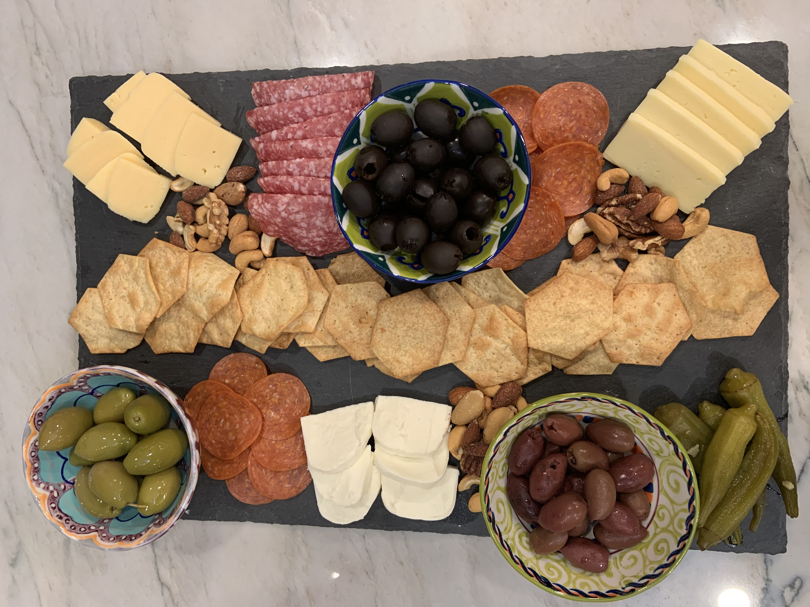

Starters | 12.08.20
Making a charcuterie board.
At every major family or friend gathering, there is always a charcuterie board. They are a fun appetizer to have for small bites that you can throw together in a snap, and you can customize for the different eaters in your life Here are my favorite items to have on my board!
Ingredients:
1 package of Gouda
1 package of Havarti
1 package of Mozzarella
1 package of Pepperoni
1 package of Salami
1 jar of Pickled Vegetables
1 can of Black Olives
1 jar of Green Olives
1 jar of Kalamta Olives
1 bag of Mixed Nuts
1 box of Crackers
Instructions:
Have your serving board out for the ingredients.
Slice the Gouda, Havarti, and Mozzarella.
Place your Crackers in the middle of the serving board.
Place your Black Olives, Green Olives, and Kalamta Olives into separate small bowls, and place on the serving tray.
Place the Pickled Vegetables in one or two places on the serving tray, but leave some room away from the Crackers.
Add the Gouda, Havarti, and Mozzarella around the serving tray laying out in a row or in a small pile.
Add the Pepperoni and Salami to the serving tray in a similar fashion to the cheeses.
Fill in empty space with the mixed nuts to give a fuller look.

{kind=link}